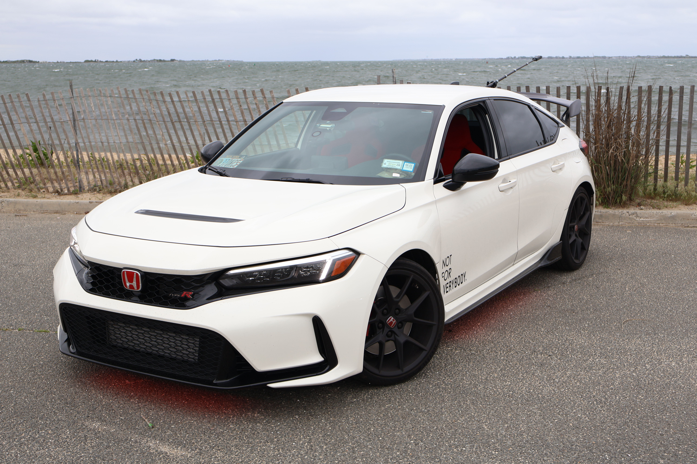
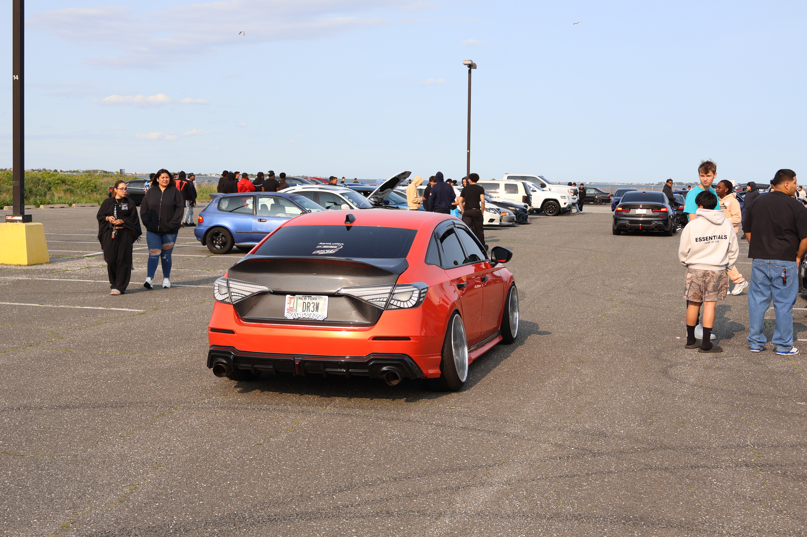
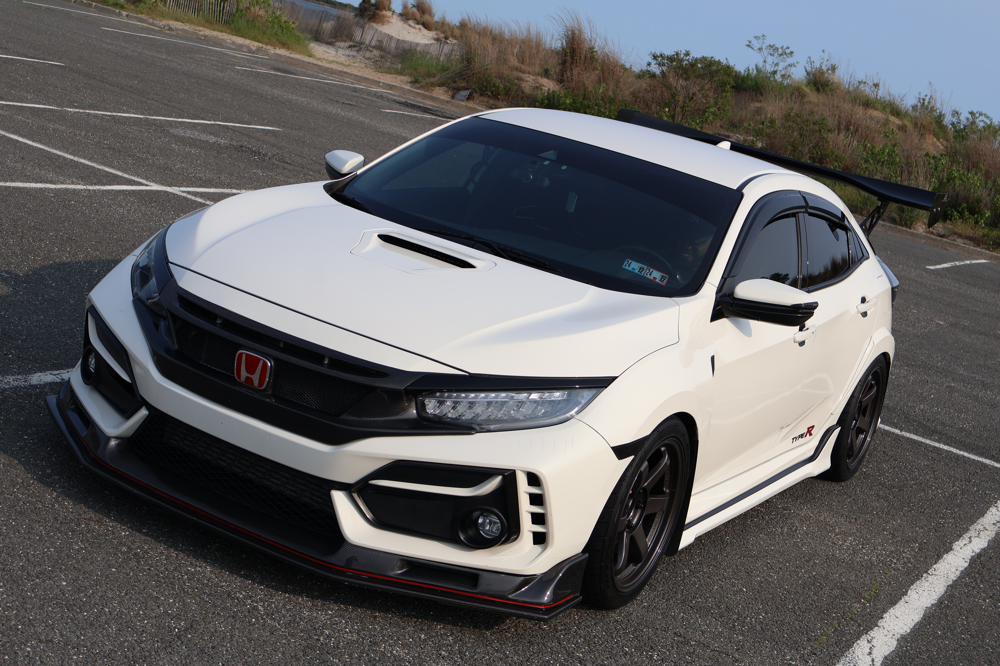
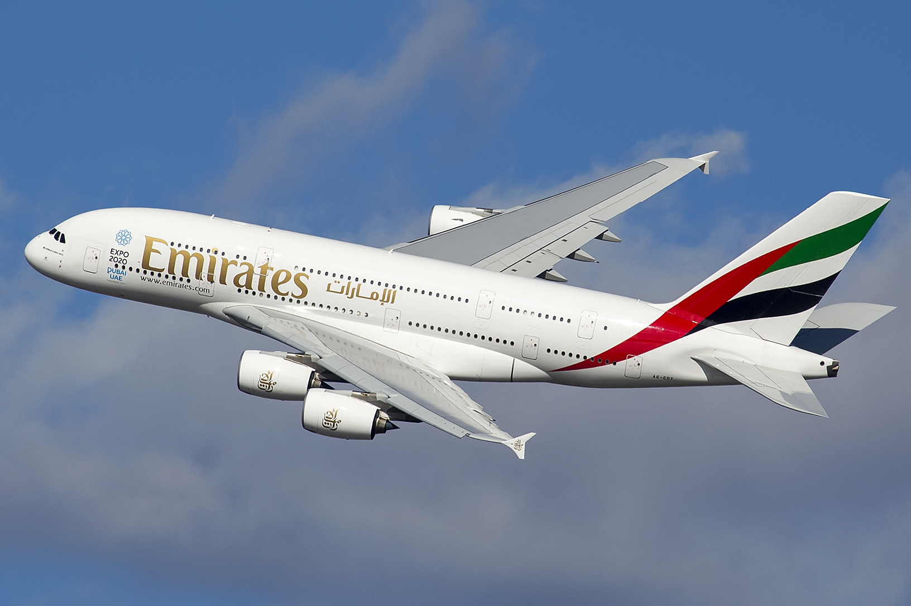
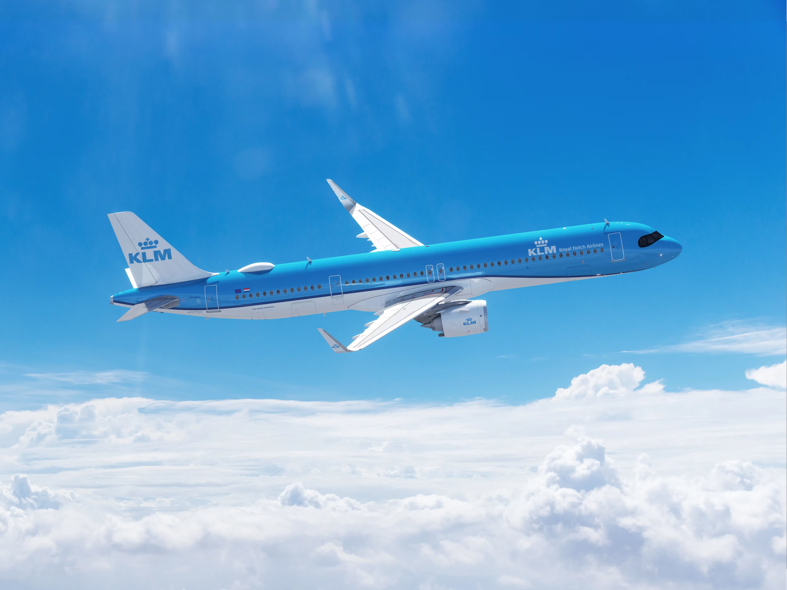
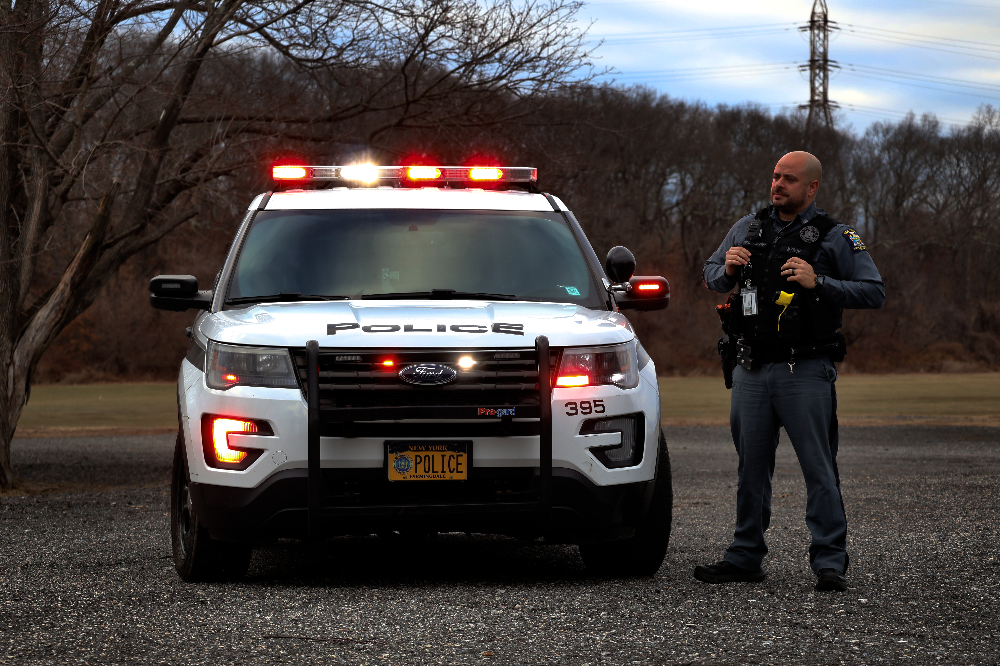
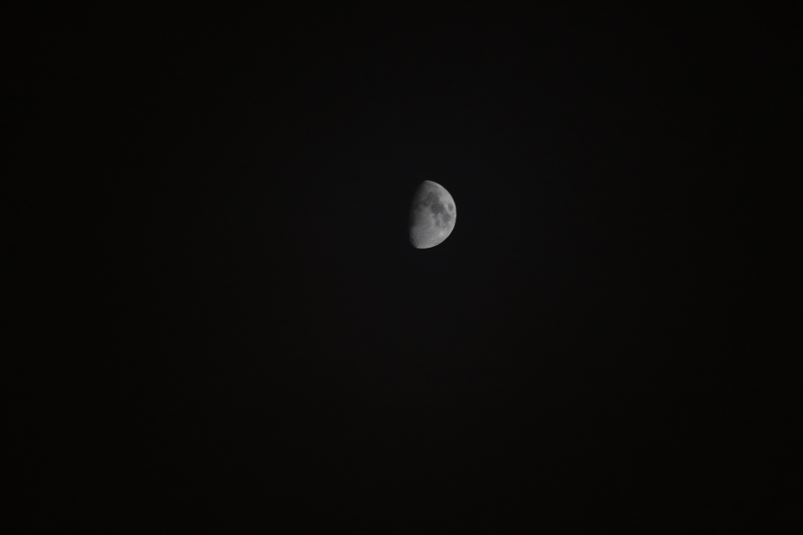

Who I Am Outside of Coding
I enjoy exploring life beyond programming. Working on cars, fixing and modifying them. The way I communicate with the world and other people through photography which allows me to capture people, cars, and landscapes is something very pleasant and cool. Aviation fascinates me, from airplanes aerodynamics all the way to ATC and aviation safety protocols. I also enjoy learning cybersecurity and keeping digital environments safe.
Cybersecurity
Learning Cybersecurity
Exploring security challenges, ethical hacking, and digital defense techniques.
Cars
Fixing & Modifying
Repairing and customizing cars for performance and style with Hands-on work on the engine, changing parts, and working on the car overall. Whether if it is something simple like changing the dash wipers all the way to exhaust, suspension and any other car's system.




Planes & Aviation
Aviation Enthusiast
Fascinated by aviation, including airplanes, aircraft design, and aviation technologies. I have a strong interest in air traffic control protocols, flight operations, aerospace engineering principles, and the history and evolution of commercial and military aviation. I enjoy exploring innovations in aircraft systems, navigation technologies, safety procedures, and emerging trends in the aerospace industry.


Photography
Capturing Moments
Taking pictures of people, cars, and landscapes, creating memories. Experimenting with lighting, styles, and subjects to improve photography skills.

